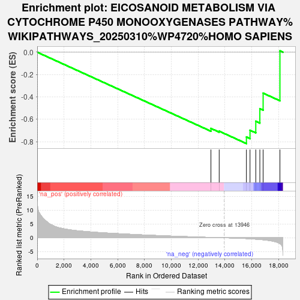
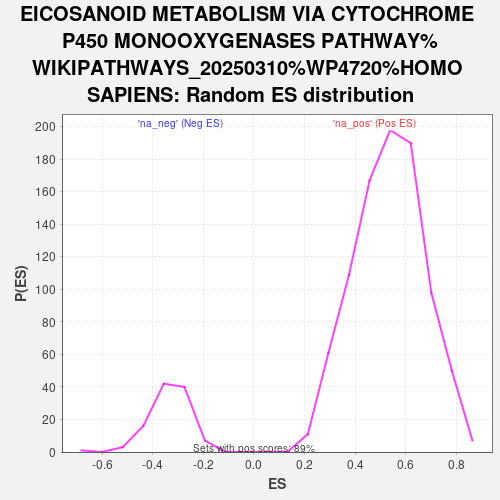

| | | Dataset | ranked_genes |
| Phenotype | NoPhenotypeAvailable |
| Upregulated in class | na_neg |
| GeneSet | EICOSANOID METABOLISM VIA CYTOCHROME P450 MONOOXYGENASES PATHWAY%WIKIPATHWAYS_20250310%WP4720%HOMO SAPIENS |
| Enrichment Score (ES) | -0.8175454 |
| Normalized Enrichment Score (NES) | -2.4310038 |
| Nominal p-value | 0.0 |
| FDR q-value | 0.0 |
| FWER p-Value | 0.0 |
Table: GSEA Results Summary

Fig 1: Enrichment plot: EICOSANOID METABOLISM VIA CYTOCHROME P450 MONOOXYGENASES PATHWAY%WIKIPATHWAYS_20250310%WP4720%HOMO SAPIENS
Profile of the Running ES Score & Positions of GeneSet Members on the Rank Ordered List

Fig 2: EICOSANOID METABOLISM VIA CYTOCHROME P450 MONOOXYGENASES PATHWAY%WIKIPATHWAYS_20250310%WP4720%HOMO SAPIENS: Random ES distribution
Gene set null distribution of ES for EICOSANOID METABOLISM VIA CYTOCHROME P450 MONOOXYGENASES PATHWAY%WIKIPATHWAYS_20250310%WP4720%HOMO SAPIENS